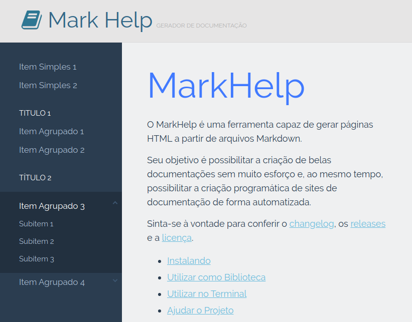

Personalizando e configurando
O MarkHelp é capaz de transformar qualquer projeto contendo arquivos markdown em HTML, formatando-os de uma forma padrão. Mas é possível personalizar várias coisas, de forma que a geração dos documentos se adapte às mais diversas necessidades.
1. Personalizando o menu lateral
Para personalizar o menu lateral basta adicionar um arquivo menu.json dentro do projeto markdown, ou especificar sua localização absoluta (caminho completo) diretamente no MarkHelp através da configuração avançada (que será abordada a seguir).
Este arquivo deve possuir a seguinte formatação:
{
"Item Simples 1" : "item-um.md",
"Item Simples 2" : "item-dois.md",
"Titulo 1" : {
"Item Agrupado 1" : "Diretório Um/item-três.md",
"Item Agrupado 2" : "Diretório Um/item-quatro.md"
},
"Título 2": {
"Item Agrupado 3" : {
"Subitem 1" : "Diretório Dois/item-cinco.md",
"Subitem 2" : "item-seis.md",
"Subitem 3" : "item-sete.md"
},
"Item Agrupado 4" : {
"Subitem 4" : "Diretório Três/item-oito.md",
"Subitem 5" : "Diretório Três/item-nove.md"
}
}
}
Entendendo a estrutura
Analisando o objeto Json, vejamos o que significa cada item na estrutura:
- Nível 1: se o valor for uma url, esses itens serão renderizados diretamente no primeiro nível do menu;
- Nível 1 (objeto como valor): se o valor for um outro objeto, os itens dele serão considerados grupos de itens. Isso significa que eles serão agrupados em um bloco delimitado por um título;
- Nível 2: se o valor for uma url, esses itens serão renderizados diretamente no menu, dentro da delimitação do título;
- Nível 2 (objeto como valor): se o valor for um outro objeto, os itens dele serão considerados um submenu. Isso significa que eles estarão ocultos, devendo ser clicado no item para expandir os demais sub-items;
Abaixo, um exemplo desta estrutura após a renderização.

2. Configurações avançadas
O MarkHelp possui várias configurações pontuais, que mudam seu comportamento no momento da renderização de páginas HTML.
Essas configurações podem ser especificadas criando um arquivo config.json dentro do projeto markdown, ou especificando sua localização diretamente na implementação ou na linha de comando do MarkHelp.
Abaixo, seguem todas elas:
- path.theme: define o caminho completo até o tema desejado. Os temas padrões se encontram no diretório src/Themes do código fonte do MarkHelp. Você pode copiar este diretório, fazer as alterações desejadas no tema e passar seu caminho completo neste parâmetro de configuração;
-
logo.status: define se o logotipo aparecerá ou não no cabeçalho das páginas HTML. Por padrão, o valor setado é
true; - project.name: define o nome do projeto ao qual a documentação renderizada se refere;
- project.slogan: define uma pequena frase, que aparecerá no cabeçalho, como slogan do projeto;
- project.description: define um texto descritivo para a documentação ser indexada pelos mecanismos de busca. Especifique no máximo 255 caracteres para uma boa descrição;
- project.images: define a localização do diretório de imagens (se o projeto possuir). A url pode ser passada de forma absoluta (caminho completo) ou de forma relativa, usando a tag especial {{project}} como prefixo (por exemplo, '{{project}}/images'), indicando que o diretório está no projeto markdown;
- git.url: define a url para acessar o repositório do projeto;
- git.fork: define se a bandeira de "Faça um fork" deverá, ou não aparecer;
- copy.name: o nome da pessoa/instituição detentora dos direitos da documentação renderizada;
- copy.url: a url para o site da pessoa/instituição detentora dos direitos;
-
support.menu: define o caminho absoluto para o arquivo
menu.json. Por padrão, este arquivo será buscado no diretório do projeto markdown. Caso nenhuma das opções estiver presente, o menu lateral não será renderizado; - support.document: especifica um documento HTML como base para a renderização das páginas. Por padrão, este documento é carregado automaticamente do diretório support do tema em uso;
- assets.styles: define um arquivo contendo os estilos css, para usar no lugar do contido no tema em uso;
- assets.scripts: define um arquivo contendo as rotinas javascript, para usar no lugar do contido no tema em uso;
- assets.logo.src: define o caminho completo até o logotipo da documentação. Este parâmetro é muito útil para personalizar a renderização e utilizar a identidade visual corretamente. Por padrão, o logotipo do MarkHelp será utilizado;
- assets.icon.favicon: define o caminho completo até o favicon da documentação. Por padrão, o ícone do MarkHelp será utilizado;
- assets.icon.apple: define o caminho completo até o apple-touch-icon da documentação. Por padrão, o ícone do MarkHelp será utilizado.
Observação: usando o MarkHelp para implementar em projetos PHP, é possível setar configurações pontuais, sem a necessidade de usar um arquivo
config.json. Para mais informações, confira Implementando projetos PHP.